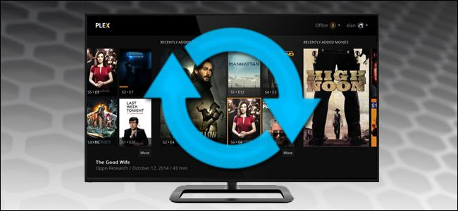
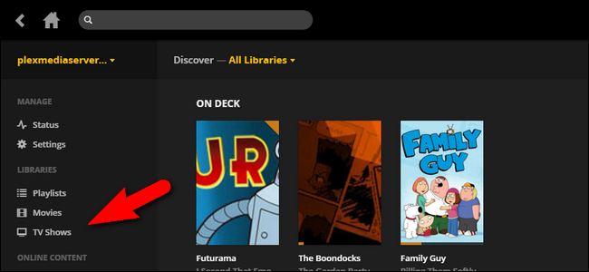
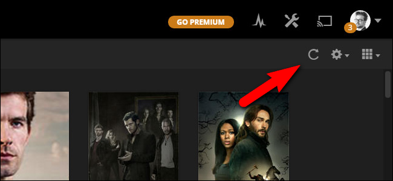
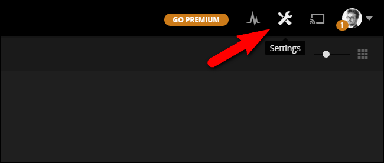
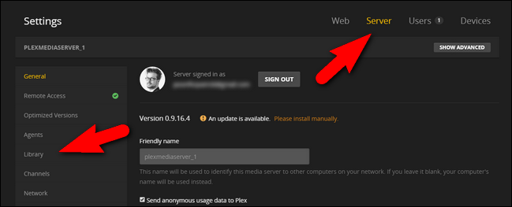
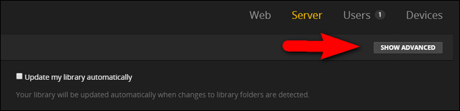
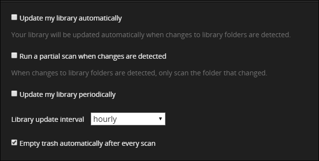

How-To Geek
How to Update Your Plex Media Library, Manually and Automatically

Besides the media itself, the most important element of a media server software is how up to date it is–you can’t watch videos if the server doesn’t know they’re there. Plex Media Server offers three ways to keep your media collection up to date so you always know what’s available.
Why Would I Want To Do This?
There are three components to the Plex Media Server experience. There’s the media itself (like your TV shows), there’s the actual Plex Media Server that manages your media, and then there are the Plex client applications you access the server from via your Apple TV, your iPhone, or other devices.
Because you aren’t directly browsing the folders that contain your videos, it is critically important that Plex Media Server’s database be up to date. If you’re away on a business trip, for example, trying to catch up on your favorite shows, but Plex Media Server hasn’t updated to include the latest episodes, you’re out of luck. Until the library is updated, you won’t be able to watch them.
Thankfully, the Plex Media Server software has multiple ways you can ensure your media list is always current including manual updating and multiple ways to automate the update process.
How to Manually Update Your Library
The simplest method is to manually update your library. Even if you follow the later steps in this guide and completely automate the update process, you should always be familiar with the manual update process as it’s a great way to force an immediate update.
To manually update your Plex library, log into the web control panel for your Plex Media Server. On the main page, select one of your libraries from the left hand navigation pane, as seen below, like your “TV Shows” library.

Within the library, click on the circular arrow icon in the upper right corner.

This will trigger a manual update for that library, and Plex Media Server will rescan the directories assigned to that library. Repeat this process for all other libraries (e.g. Movies and Music) you wish to update.
How to Automatically Update Your Library
Manual updating is great if you need to force the update right that second, but for ease of use and really frictionless user experience, you really want to enable automatic updating. Not only is automatic updating supremely convenient for you, but it’s practically a necessity if you have other people in your house. If Plex is always up to date then you, the manager of the media server empire, won’t be pestered with questions about whether a favorite show is up to date.
There are several ways you can automate library updates, and you’ll find all of them in a single menu within the settings of your Plex Media Server. Click on the Settings tool icon in the upper right corner of the Plex web interface.

Within the Settings menu select the “Server” tab along the top navigation bar and then select “Library” from the left hand navigation panel.

To see all the available options we’ll be highlighting, you need to click on the “Show Advanced” button to fully expand the library options.

With the advanced options visible, you’ll see the following entries in the Library settings menu:

There’s several options here and you should consider each one based on where your media is stored and your update needs.
Automatic Updates: The Best Option For Nearly Everyone
The top option, “Update my library automatically”, is the ideal one. Nearly every Plex user should check it. The only time automated library updates aren’t a viable solution is for Plex users with their media stored on a different computer from the Plex Media Server program (since the automatic detection of folders doesn’t typically work for folders on a network share).
Checking “Run a partial scan when changes are detected” is an additional option that can be paired with the automatic library update. This option will decrease library update time and amount of system resources used for library updates. It’s not a huge deal on a powerful system, but its a time saver regardless (and it’s quite useful if your Plex Media Server hardware is underpowered).
Scheduled Updates: Great for Media On Network Shares
If you find that automatic library updating doesn’t work for your system, you can always use the “Update my library periodically” setting to set an update schedule. This option works for both local files and files located on a network share (that is, a computer other than the one Plex Media Server is installed on), since it manually scans the entire directory structure at the frequency you specify. You can specify the update frequency in increments as low as every 15 minutes all the way up to once a day.
Automatic Trash: The Housekeeping You May Not Want
Finally there’s a small consideration regarding library cleanup. By default, the option “Empty trash automatically after every scan” is checked. If you have a fixed library (e.g. all your media is on a specific server on fixed internal drives) it’s a good idea to leave this checked. That way if you delete a bunch of stuff from your media server, Plex will automatically tidy up after you and remove all the entries for that media.
If, however, you use external drive that are sometimes removed from the Plex Media Server computer, you have media shared on the Plex Media Server that is located on a network share of another computer that isn’t always on, or some other situation where media you wish to keep in your library is not always online, do not check the “Empty trash” option. If you do, every time Plex runs an update scan and fails to see the offline media it will delete it (only to turn around and rescan the media, download all the metadata, and so on, the next time it’s online).
Once you have automatic updating configured just the way you want, you can sit back and enjoy one of the best benefits of Plex Media Server: always up-to-date and centralized management of your entire media collection.
![]()
![]()
![]()
![]()
![]()
![]()
![]()
![]()
![]()